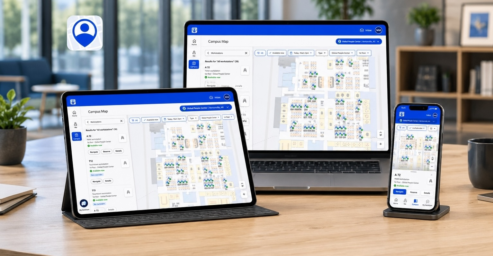
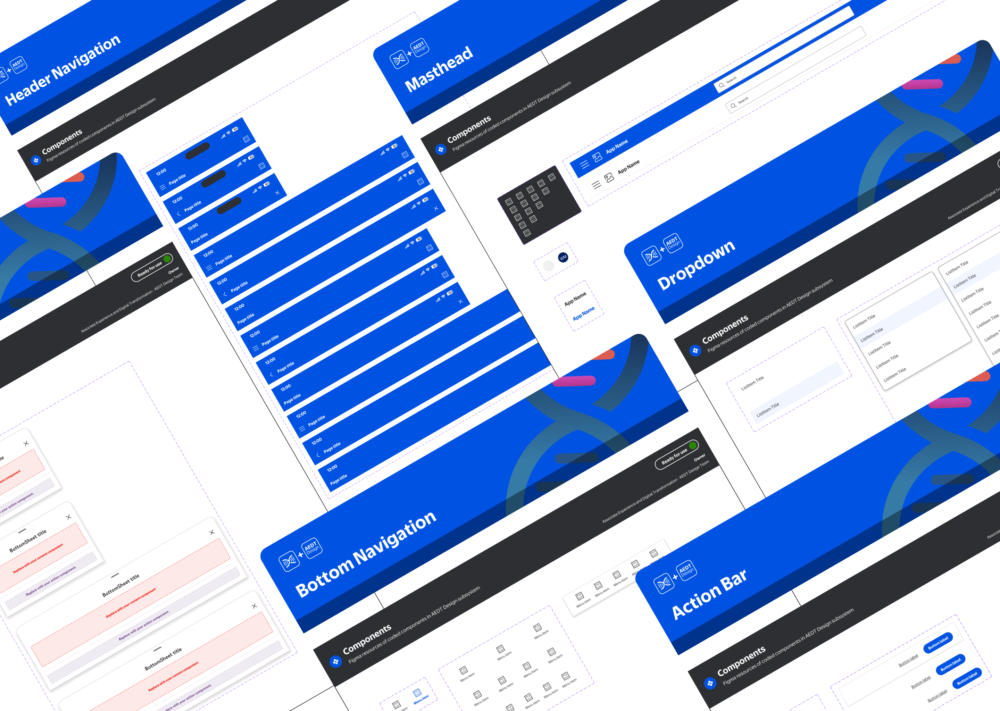
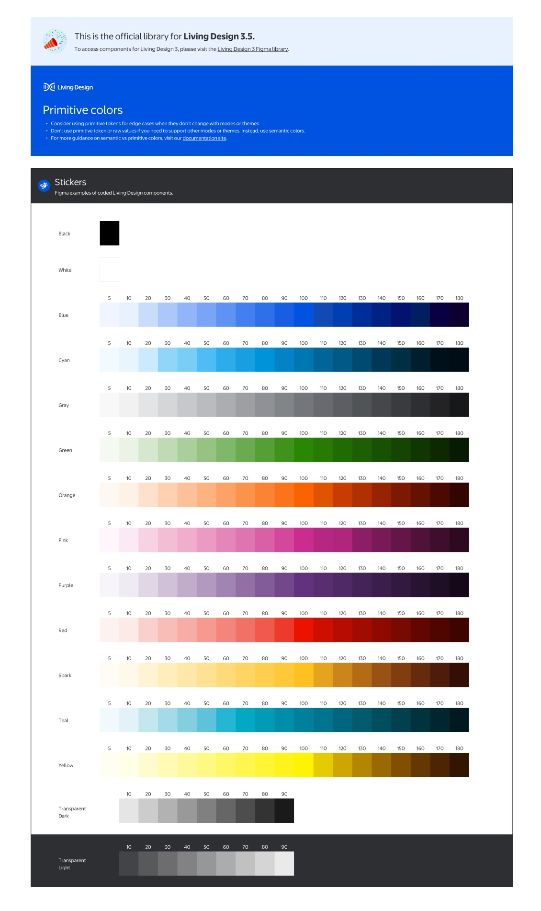
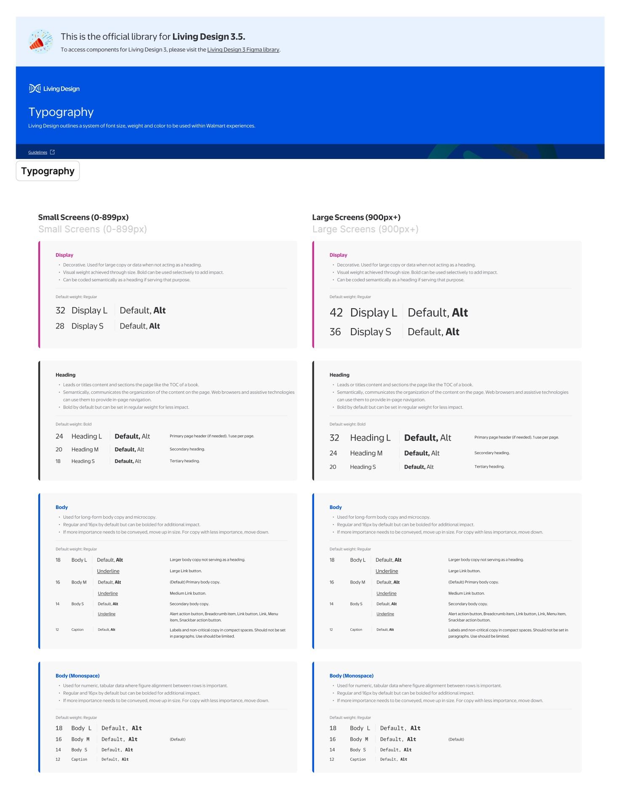
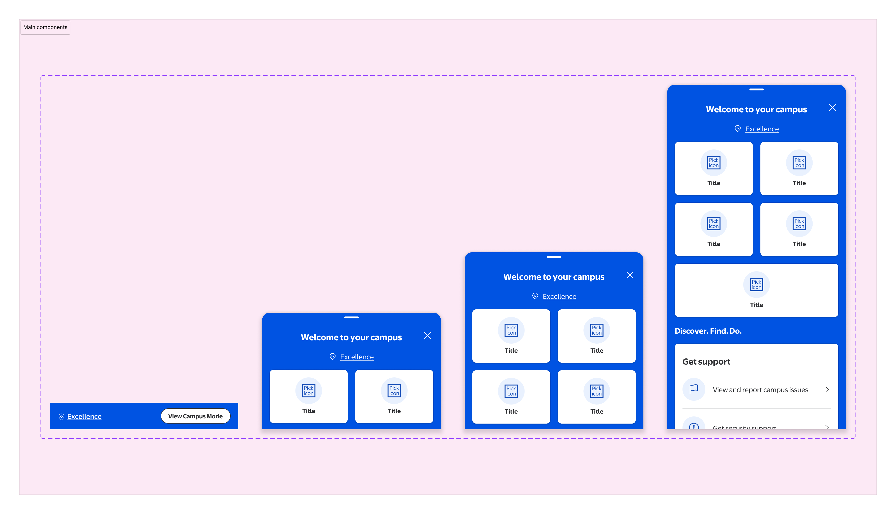
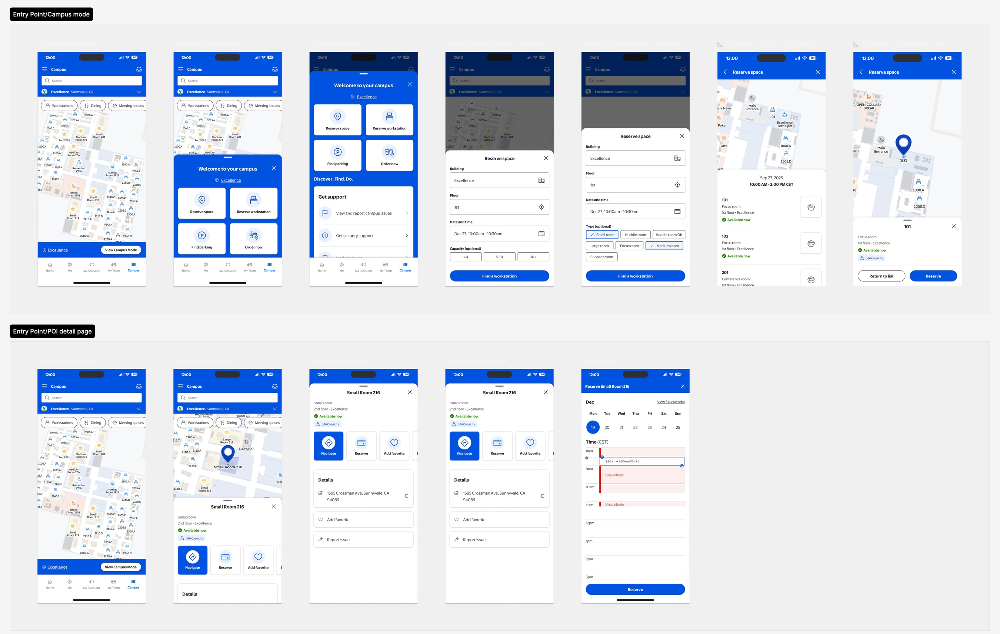
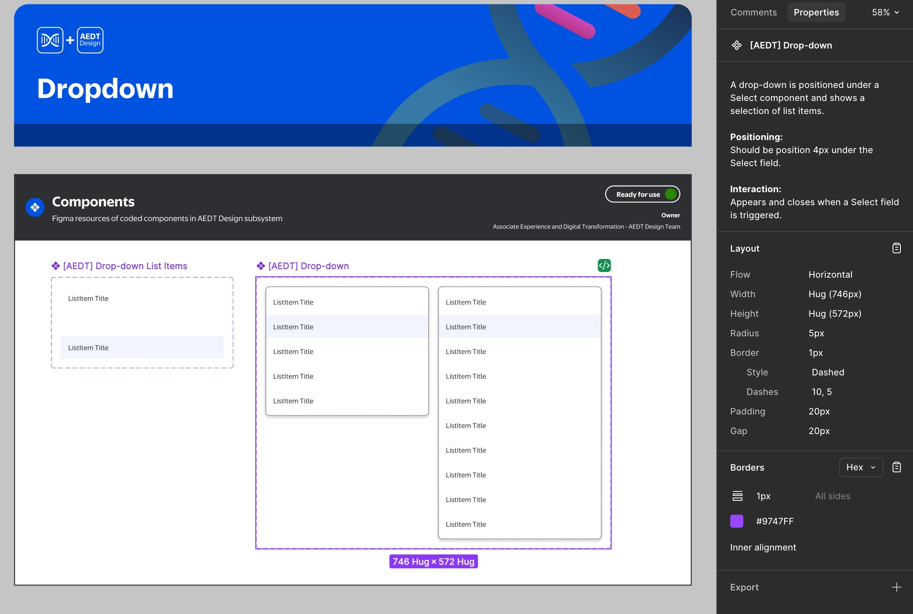
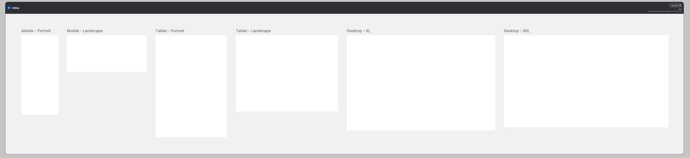
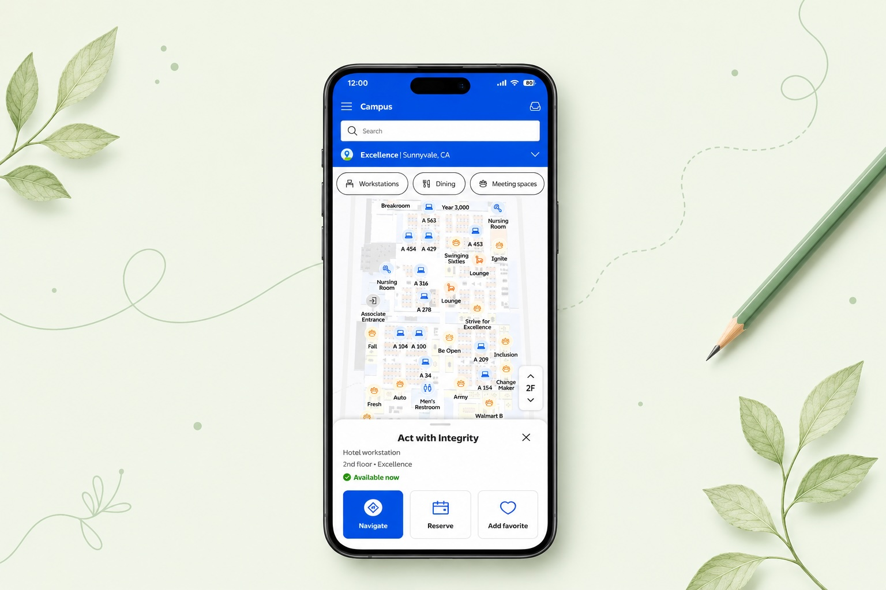
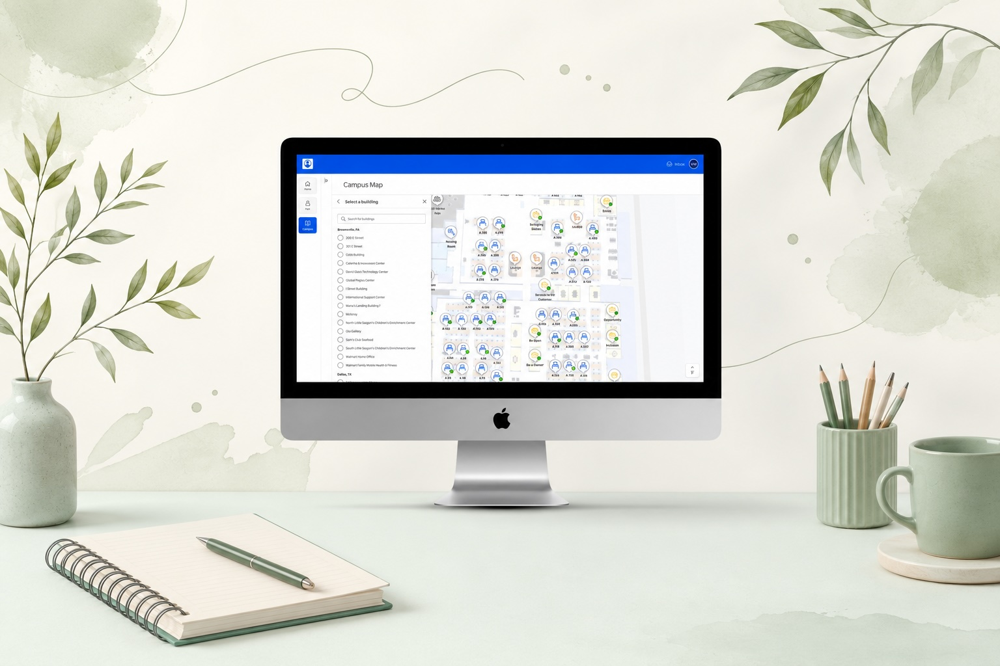

A wayfinding subsystem that finally speaks one language
How I helped consolidate navigation patterns from two product teams into a single LD 3.5-approved subsystem - reviewed by the Foundation team and standardized for developer implementation.


A navigation gap that two teams filled independently.
Walmart's Living Design 3.5 is the universal design system across all three product organizations. The navigation domain (maps, POI search, indoor routing, room booking) sits within AX and falls outside what LD 3.5 covers - which is where the subsystem comes in.
The Me@Campus app is Walmart's primary navigation product. Visit (visitor management, check-in, preregistration) had built navigation-adjacent patterns independently. Over time, the overlap became hard to ignore: similar components, different implementations, no shared reference.
Neither team had built the wrong thing - but with similar patterns in two places and no shared foundation, consolidation was overdue.
The subsystem extends LD 3.5 - it doesn't replace it. LD 3.5 covers color primitives, typography, tokens, and core components. The navigation subsystem layers on top, filling the domain gap. Every token, color, and type decision traces back to LD 3.5 primitives - which is what made Foundation review possible.


What the cross-team audit surfaced
Three teams audited what had been built: Me@Campus designers (who owned the navigation product), Visit designers (building navigation-adjacent patterns), and the Foundation team (design system alignment and accessibility compliance). Together we mapped where independent work had produced inconsistency.
Both teams had built navigation patterns independently: search bars, POI cards, map panels, solving the same problems with incompatible solutions.
Navigation patterns sat outside LD 3.5's scope. Each team started from scratch and made different decisions.
Component names, property structures, and variant logic all differed. Engineers reconciled Figma layer names with code before every handoff.
Without a consolidated library, there was no path for the Foundation team to review, approve, or standardize navigation patterns for implementation.
These four issues shaped the goal: consolidate into a single subsystem, get it Foundation-approved, then standardize attributes for developer implementation.
Four contributions that made it work
1. How I structured it
A shared hierarchy agreed upon with engineering before any component was built.
I defined a four-level hierarchy that maps directly to how engineering organizes its code - making the Figma file structure a natural mirror of the component library.
Components
Buttons, fields, chips, icons, badges - the smallest reusable building blocks. Each defined once, used everywhere.
Patterns
Recurring UI compositions assembled from components. Defined at the pattern level so product teams don't rebuild the same layouts independently.
Features
Full product features assembled from patterns. Each feature has both agnostic and product-specific variants to support reuse across Campus and Visit.
Flows
Complete task flows spanning multiple features. The highest level of audit - where cross-product consistency is most visible and most critical.


2. How I aligned it
Co-defining governance with the Foundation team and engineering, not just presenting specs to them.
Identifying what to merge was easy. Getting three teams to agree on the rules before anything shipped was the real work. I worked across all three teams to co-define the governance layer: naming conventions, container rules, the four-level hierarchy, and a contribution model both product teams could work within.
This meant structuring the library for Foundation review: organizing components into explicit layers (usage guidelines, agnostic components, product-specific variants, navigation patterns, documentation), then aligning on intake, versioning, and implementation notes for engineering.
- Naming conventions for components, variants, and asset files - agreed with engineering so Figma layer names map directly to code
- Container rules and base part logic - defining when something should be a base part versus an atom
- The component → pattern → feature → flow hierarchy as the shared mental model across design and engineering
- Cross-team contribution model - how other Campus product teams can add to the subsystem without introducing drift
- Versioning and intake process - when a component gets updated, how that change propagates and who reviews it
Cross-team sessions surfaced edge cases neither team had caught alone - naming conflicts that would have caused implementation issues, and reuse opportunities that cut the component count. Having the Foundation team in the room raised the bar: tighter standards than either team would have set independently, and confidence on both sides that what shipped would hold up under review.

3. How I documented it
Naming conventions and property structure that made the handoff frictionless.
Engineers were reconciling Figma layer names with code variables before every handoff. A strict, shared taxonomy closed that gap - Figma and codebase now tell the same story.
All components use Boolean-driven properties aligned with React Native conventions - designers toggle variations from the panel without duplicating frames, keeping the file clean and auditable.
4. How I scaled it
Responsive contracts and agnostic components built for reuse, not just the current product.
Every component was built to work across all three viewport tiers. Viewport templates were established first - defining the responsive contract each pattern had to satisfy before shipping.



Each component has two versions: agnostic (generic POI card, search, list item) and product-specific (Me@Campus, Visit Admin, Visit Kiosk, Preregistration). Any team can adopt the agnostic version immediately, then extend it without forking the shared foundation.
Every component validated against LD 3.5 standards before handoff - kiosk, mobile, and desktop all pass at their respective contrast requirements.
ARIA label guidance embedded directly in the component documentation - no ambiguity about what engineers should attach at implementation.
Desktop components include keyboard and tab order recommendations, designed for the admin portal and Me@Campus web surfaces where keyboard navigation is expected.
Micro-interactions account for reduced-motion preferences - animated transitions are optional layers, not baked into the base component behavior.
A scoped contribution with a clear foundation for what comes next
Two months delivered: a consolidated component architecture approved by the Foundation team, a shared naming taxonomy adopted by both teams, an agnostic component set covering core navigation patterns, and a governance model for ongoing maintenance. Scoped, not company-wide - but it fills a real gap in LD 3.5.
Still in progress: product-specific variant rollout, developer implementation, and adoption as both products converge. The architecture is now being stress-tested by real product work - the right kind of next step.
Campus and Visit are converging into a unified experience. A shared navigation language established now means both teams build on the same foundation - not two separate ones.
Design system contributions are often invisible - the value is in what doesn't happen: the duplicate that never got built, the naming conflict that never reached code, the confusion resolved in a session rather than a post-launch bug report. This case study is a record of that work.
What I'd do differently
-
Surface the audit findings earlier and more visibly. The audit findings were the clearest case for why this subsystem mattered. I used them internally but could have shared them more explicitly with stakeholders to build faster alignment on scope.
-
Define the agnostic/product-specific split from day one. The agnostic/product-specific distinction emerged mid-project. Had it been part of the original architecture decision, the library would have been cleaner from the start - less refactoring of early components.
-
Build the contribution model before the first component ships. Governance is easier to introduce as the foundation than to retrofit later. Future subsystem work should start with the contribution model, not end with it.